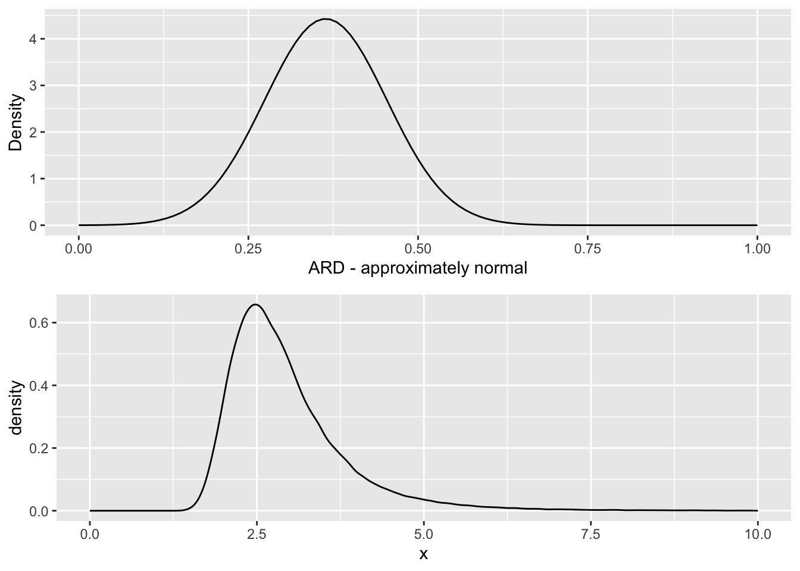

5 Binary outcome variable
So far almost everything we’ve covered has related to continuous outcome variables, which we assumed to be normally distributed. This allowed us to use familiar techniques such as the \(t\)-test, and to take baseline information into account in an accessible way (the linear model / ANCOVA). However, very often clinical trials do not have a continuous, normally distributed output, and in the next two sections we will look at two other common possibilities: binary data (this section) and survival data (next section).
A binary outcome might be something like ‘the patient was alive 2 years after the procedure’ or not, or ‘the patient was clear of eczema within a month’ or not. Such variables are often coded as ‘success’ or ‘failure’, or 1 or 0.
5.1 Sample size for a binary variable
For a trial whose primary outcome variables are binary, the sample size calculations we derived in Chapter 2 will not work, so in this section we’ll work through a similar method developed for binary variables.
Suppose we conduct a trial with a binary primary outcome variable and two groups, \(T\) and \(C\), containing \(n_T\) and \(n_C\) participants respectively. The number of successes in each group, \(R_T\) and \(R_C\), will be Binomially distributed,
\[\begin{align*} R_T &\sim{Bi\left(n_T,\, \pi_t\right)} \\ R_C &\sim{Bi\left(n_C,\,\pi_C\right)}. \end{align*}\]
Our null hypothesis now is therefore that \(\pi_T = \pi_C\), ie. that the probability of success is the same in each group, and we will need enough participants to test this hypothesis with sufficient power. With the trial data we will be able to produce estimates
\[\begin{align*} p_T & = \frac{R_T}{n_T} \\ p_C & = \frac{R_C}{n_C}. \end{align*}\]
Recall that the variance of \(p_X\) (where \(X\) is \(T\) or \(C\)) is \(\pi_X\left(1-\pi_X\right)\), such that the variance depends on the mean. This means there is no free parameter equivalent to \(\sigma\) in the binary situation, and the number of participants required will depend on the approximate value of \(\pi_T\) and \(\pi_C\). This makes the derivation of a sample size formula somewhat more complicated, and so we first of all make a transformation to remove the dependence of mean and variance. To do this we use an approximation technique called the delta method.
5.1.1 The Delta Method
We start with a random variable \(X\) that has mean \(\mu\) and variance \(\sigma^2 = \sigma^2\left(\mu\right)\), ie. its variance depends on its mean. If we have a ‘well-behaved’ (infinitely differentiable etc.) function \(f\left(X\right)\), what are its mean and variance? To find this exactly requires us to evaluate a sum or integral, and this may be analytically intractable, so we use instead a crude approximation.
First, we expand \(f\left(X\right)\) in a first-order Taylor series about \(\mu\), which gives us
\[\begin{equation} f\left(X\right) \approx f\left(\mu\right) + \left(X-\mu\right)f'\left(\mu\right) \tag{5.1} \end{equation}\]
and therefore
\[\begin{equation} \left(f\left(X\right) - f\left(\mu\right)\right)^2 \approx \left(X-\mu\right)^2\left[f'\left(\mu\right)\right]^2. \tag{5.2} \end{equation}\]
If we take expectations of Equation (5.1) we find \(E\left(f\left(X\right)\right) \approx f\left(\mu\right)\). We can use this in the left-hand side of Equation (5.2) so that when we take expectations of Equation (5.2) we find
\[\begin{equation} \operatorname{var}\left(f\left(X\right)\right) = \sigma^2\left(\mu\right)\left[f'\left(\mu\right)\right]^2, \tag{5.3} \end{equation}\]
where both sides come from
\[\operatorname{var}\left(X\right) = \operatorname{E}\left[\left(X - \mu\right)^2\right] .\] This series of approximations, which generally works well, is the Delta method.
One way in which it is often used, and the way in which we will use it now, is to find a transformation \(f\left(X\right)\) for which (at least approximately) the variance is unrelated to the mean. To do this, we solve the differential equation
\[ \operatorname{var}\left[f\left(X\right)\right] = \sigma^2\left(\mu\right) \left[f'\left(\mu\right)\right]^2 = \text{constant}. \] In the case of proportions for a binary variable, this becomes
\[ \frac{\pi\left(1-\pi\right)}{n} \left[f'\left(\pi\right)\right]^2 = K\] for some constant \(K\). We can rearrange this to
\[f\left(\pi\right) \propto{ \int{\frac{1}{\sqrt{\pi\left(1-\pi\right)}}d\pi}}\] and by substituting \(\pi = u^2\) we find
\[\begin{align*} f\left(\pi\right) & \propto \int{\frac{1}{\sqrt{u^2\left(1-u^2\right)}}2u\,du}\\ &\propto \int{\frac{1}{\sqrt{1 - u^2}}}du\\ & \propto \arcsin{\left(\sqrt{\pi}\right)}. \end{align*}\]
Setting \(u=\sqrt{\pi}\) again and \(f\left(\pi\right) = \arcsin\left(\sqrt{\pi}\right)\). Using the chain rule, we find
\[\left[f'\left(\pi\right)\right]^2 = \frac{1}{4\pi\left(1-\pi\right)} .\] Finally, we can substitute this into Equation (5.3), with \(f\left(X\right) = \arcsin\left(\sqrt{X}\right)\) to find
\[\begin{align*} \operatorname{var}\left[f\left(X\right)\right] & \approx \sigma^2\left(\pi\right)\left[f'\left(\pi\right)\right]^2 \\ & \approx{\frac{\pi\left(1-\pi\right)}{n}\cdot\frac{1}{4\pi\left(1-\pi\right)}}\\ & \approx{\frac{1}{4n}}, \end{align*}\]
and we have achieved our aim of finding a transformation of \(X\) whose variance is not related to the mean. This is sometimes called the angular transformation.
5.1.2 A sample size formula
For a binary variable, our estimate \(p_X\) (the proportion of successes in group \(X\)) is approximately normally distributed, since the central limit theorem applies. This is not true for small values of \(n\) (less than around 30, which is very small for a clinical trial) or for values of \(\pi\) close to 0 or 1, say \(\pi<0.15\) or \(\pi>0.85\) (this is more likely to be an issue for some trials).
The linear approximation in Equation (5.1) shows us that if \(p_X\) is normally distributed then \(f\left(p_X\right) = \arcsin\left(\sqrt{p_X}\right)\) will be [approximately] normally distributed too. In fact, \(\arcsin\left(\sqrt{p_X}\right)\) is approximately normally distributed with mean \(\arcsin{\left(\sqrt{\pi_X}\right)}\) and variance \(1/\left(4\pi_X\right)\). Using this information, we can test \(H_0:\,\pi_T =\pi_C\) at the 100\(\alpha\)% confidence level by using the variable
\[ D = \frac{\arcsin{\left(\sqrt{p_T}\right)} - \arcsin{\left(\sqrt{p_C}\right)}}{\sqrt{\frac{1}{4n_T} + \frac{1}{4n_C}}}= \frac{\arcsin{\left(\sqrt{p_T}\right)} - \arcsin{\left(\sqrt{p_C}\right)}}{\frac{1}{2}\lambda\left(n_T,n_C\right)}, \] which is analogous to the variable \(D\) constructed in Section 2.3; the difference in \(f\left(p_T\right)\) and \(f\left(p_C\right)\) divided by the standard error of the difference.
Using the same logic as in Sections 2.4 and 2.5, the starting place for a sample size formula to achieve significance level \(\alpha\) and power \(\beta\) is
\[ \frac{2\left(\arcsin{\left(\sqrt{\pi_T}\right)} - \arcsin{\left(\sqrt{\pi_C}\right)}\right)}{\lambda\left(n_T,n_C\right)} = z_\beta + z_{\frac{\alpha}{2}}. \] For two groups of equal size \(N\), this leads us to
\[\begin{equation} N = \frac{\left(z_\beta + z_{\frac{\alpha}{2}}\right)^2}{2\left(\arcsin{\left(\sqrt{\pi_T}\right)} - \arcsin{\left(\sqrt{\pi_C}\right)}\right)^2}. \tag{5.4} \end{equation}\]
Because \(\arcsin{\left(\sqrt{\pi_T}\right)} - \arcsin{\left(\sqrt{\pi_C}\right)}\) is not a function of \(\pi_T - \pi_C\), we cannot express this in terms of the difference itself, but instead need to specify the expected probabilities of success in each group. In practice, it is likely that the success rate for the control group \(\left(\pi_C\right)\) is well understood, and the probability for the intervention group \(\left(\pi_T\right)\) can be specified by using the nearest clinically important value of \(\pi_T\).
Example 5.1 (From Smith et al. 1994) This trial compares two approaches to managing malignent low bile duct obstruction: surgical biliary bypass and endoscopic insertion of a stent. The primary outcome variable was ‘Did the patient die within 30d of the procedure?’, and the trial was designed to have \(\alpha=0.05,\,\beta=0.95\), which gives \(z_{\frac{\alpha}{2}}=1.96,\,z_{\beta} = 1.65\). The trial wanted to be able to determine a change in 30 day mortality rate from 0.2 to at most 0.05. Plugging these numbers into Equation (5.4)) gives us
\[ N = \frac{\left(1.65 + 1.96\right)^2}{2\left(\arcsin{\left(\sqrt{0.2}\right)} - \arcsin{\left(\sqrt{0.05}\right)}\right)^2} = 114.9, \] and so each group in our trial should contain 115 patients.
If instead our aim had been to detect a change from around 0.5 to 0.35 (the same in terms of \(\pi_A - \pi_B\)), we would instead have needed
\[ N = \frac{\left(1.65 + 1.96\right)^2}{2\left(\arcsin{\left(\sqrt{0.5}\right)} - \arcsin{\left(\sqrt{0.35}\right)}\right)^2} = 280.8 ,\] that is 281 patients per trial arm.
For a group \(n\) of participants, we will have allocated \(n_C\) to the control group (group \(C\)), and \(n_T\) to the treatment group (group \(T\)). The natural statistical model to apply to this situation is therefore a binomial distribution, for example in group \(C\) the number of ‘successes’ would be modelled by
\[R_C \sim \operatorname{Bi}\left(n_C,\,\pi_C\right).\]
Similarly the number of successes in the treatment group can be modelled as \[R_T \sim\operatorname{Bi}\left(n_T,\,\pi_T\right),\] and the focus of our analysis is on comparing \(\pi_C\) and \(\pi_T\). To do this we will require point estimates of both quantities and interval estimates for some measure of the discrepancy between them. We will also need ways to test the null hypothesis that \(\pi_C = \pi_T.\)
5.2 Point estimates and Hypothesis tests
First of all, we can tabulate the results of a trial with a binary outcome like this:
| Successes | Failures | Total | |
|---|---|---|---|
| Treatment | \(r_T\) | \(n_T-r_T\) | \(n_T\) |
| Control | \(r_C\) | \(n_C-r_C\) | \(n_C\) |
| Total | \(r\) | \(n - r\) | \(n\) |
Note that because this is a table of observed values, they are now all in lower case.
We can estimate \(\pi_C\) and \(\pi_T\) by the sample proportions
\[ \begin{aligned} p_C &= \frac{r_C}{n_C}\\ p_T &= \frac{r_T}{n_T} \end{aligned}. \]
We know from the properties of the binomial distribtion that \(\operatorname{E}\left(p_C\right) = \pi_C\) and \[\operatorname{Var}\left(p_C\right) = \frac{\pi_C\left(1-\pi_C\right)}{n_C},\] and similarly for \(\operatorname{E}\left(p_T\right)\) and \(\operatorname{Var}\left(p_T\right)\).
If we think in terms of individual participants, we have the variable \(y_{iC}\) for the outcome of the \(i\)-th patient in group \(C\), with \(y_{iC}=1\) if the participant’s outcome is ‘success’ and \(y_{iC}=0\) otherwise. Then we have
\[r_C = \sum\limits_{i=1}^{n_C} y_{iC},\] and similarly for group \(T\). Since \(p_C\) and \(p_T\) are therefore sample means, we can apply the Central Limit Theorem to conclude that \(p_C\) and \(p_P\) can be approximated by normal distributions:
\[ \begin{aligned} p_C & \sim N\left(\pi_C,\, \frac{\pi_C\left(1-\pi_c\right)}{n_C}\right)\\ p_T & \sim N\left(\pi_T,\, \frac{\pi_T\left(1-\pi_T\right)}{n_T}\right). \end{aligned} \]
This means we can test the null hypothesis that \(\pi_C = \pi_T\) by referring our observed value of \(p_T - p_C\) to a normal distribution with mean 0 and variance
\[ \frac{\pi_T\left(1-\pi_T\right)}{n_T} + \frac{\pi_C\left(1-\pi_c\right)}{n_C},\]
which we can approximate by substituting in \(p_C\) and \(p_T\).
However, since under the null hypothesis \(\pi_C = \pi_T = \pi\), it would be more appropriate to use this as the common variance. In this case, the variance of \(p_T - p_C\) becomes
\[\pi\left(1-\pi\right)\left(\frac{1}{n_C} + \frac{1}{n_T}\right), \] and in calculations we replace \(\pi\) with \(p = r/n\).
Putting all this together, our test statistic is
\[Z = \frac{p_T - p_C}{\sqrt{p\left(1-p\right)\left(\frac{1}{n_T} + \frac{1}{n_C}\right)}}.\]
Example 5.2 The data in this example comes from Marshall (1948), in which 109 patients with tuberculosis were assigned to either receive Streptomycin, or the control group. The primary outcome variable is whether or not the patient was improved after the treatment period. The data include several other covariates, including gender, baseline condition (good, fair or poor) and whether the patient had developed resistance to streptomycin after 6 months.
## improved
## arm FALSE TRUE
## Streptomycin 17 38
## Control 35 17We therefore have
\[ \begin{aligned} n_C & = 52 \\ n_T & = 55 \\ p_C & = \frac{17}{17+35} & = 0.327\\ p_T & = \frac{38}{38+17} & = 0.691\\ p & = \frac{38+17}{107} &= 0.514. \end{aligned} \] and can calculate our \(Z\) statistic to be
\[ \begin{aligned} Z & = \frac{0.691 - 0.327}{\sqrt{0.514\left(1-0.514\right)\left(\frac{1}{52} + \frac{1}{55}\right)}}\\ & = 3.765. \end{aligned} \]
Finally, we can find the \(p\)-value of this test statistic (making sure to have two tails!)
## [1] 0.0001665491So we can reject the hypothesis that streptomycin has no effect on tuberculosis at the \(\alpha=0.05\) level (and indeed many lower levels).
5.2.1 An alternative approach: chi-squared
Another way to approach this would be to conduct a chi-squared test.
In a chi-squared test, we first calculate the expected values \(\left(E_i\right)\) in each box of the summary table, and compare them to the observed values \(\left(O_i\right)\) by finding the summary statistic
\[ X^2 = \sum \frac{\left(o_i - e_i\right)^2}{e_i}.\]
Under the null hypothesis (that \(p_C = p_T\)) this has a \(\chi^2\) distribution with one degree of freedom. We see that the larger the differences between the observed and expected values, relative to the expected values, the larger the test statistic, and therefore the less probably under the \(\chi^2_1\) distribution.
Example 5.3 Continuing our streptomycin example, we can calculate a table of expected values by observing that proportion \(p=0.514\) of the total number of patients were improved. There are 52 in the control group, therefore we expect \(0.514\times 52 = 26.73\) improved patients in the control group, and by the same logic \(0.514\times 55 = 28.27\) in the treatment group. Our expected table is therefore
## improved
## arm FALSE TRUE
## Streptomycin 26.730 28.270
## Control 25.272 26.728We can therefore calculate the \(\chi^2\) statistic by looping through the elements of the tables:
sum_chi_sq = 0 # set a running total going
# in the following, tab_obs is the table of observed values and
# tab_exp is the table of expected values
for (i in 1:2){
for (j in 1:2){
tmp = ((tab_obs[i,j] - tab_exp[i,j])^2)/tab_exp[i,j]
sum_chi_sq = sum_chi_sq + tmp
}
}
sum_chi_sq## [1] 14.17595## [1] 0.0001664847and again we have a very significant result.
In fact, these two tests are almost equivalent, and we have that \(\sqrt{X^2} = Z\):
## [1] 3.7650975.2.2 Likelihood: A more rigorous way
Our method above was quite informal, and also made heavy use of the central limit theorem. We can use maximum likelhood to derive a more formally justified test for binary outcomes. This also lays a good foundation for more complex situations.
Earlier we set up notation \(y_{iC}\) to be outcome variable (0 or 1, in this case) of the \(i\)-th participant in the control group (and so on), and we will use that here.
The contribution of the \(i\)-th patient in group \(C\) to the likelihood is
\[\pi_C^{y_{iC}}\left(1 - \pi_C\right)^{y_{iC}} \] (remember we can ignore multiplicative constant terms). Combining all \(n_C\) patients in group \(C\), their contribution will be
\[ \pi_C^{r_C}\left(1-\pi_C\right)^{n_C - r_C},\] where \(r_C\) is the number of ‘successes’ in group \(C\). Similarly for the treatment group we will have
\[ \pi_T^{r_T}\left(1-\pi_T\right)^{n_T - r_T}.\] Gathering these terms together we can find the complete likelihood function
\[ \begin{aligned} L\left(\pi_C,\pi_T \mid \left\lbrace y_{iC}\right\rbrace, \left\lbrace y_{iT}\right\rbrace \right) & L\left( \pi_C,\pi_T \mid {n_C,n_T, r_C, r_T}\right)\\ & = \pi_C^{r_C}\left(1-\pi_C\right)^{n_C - r_C}\pi_T^{r_T}\left(1-\pi_T\right)^{n_T - r_T}. \end{aligned} \] The log-likelihood is therefore
\[ l\left( \pi_C,\pi_T \mid {n_C,n_T, r_C, r_T}\right) = r_C\log\pi_C + \left(n_C-r_C\right)\log\left(1-\pi_C\right) + r_T\log\pi_T + \left(n_T-r_T\right)\log\left(1-\pi_T\right).\] If we differentiate with respect to \(\pi_C\), we find
\[\frac{\mathrm{d} l\left( \pi_C,\pi_T \mid {n_C,n_T, r_C, r_T}\right)}{\mathrm{d}\pi_C} = \frac{r_C}{\pi_C} - \frac{n_C-r_C}{1-\pi_C}.\] Setting this to zero we find (reassuringly!) that \(\hat\pi_C = \frac{r_C}{n_C}\). We can repeat this exercise for \(\pi_T\). If we assume that there is one common probability \(\pi\) of success, we can find \(\hat\pi\) by maximising \(l\left(\pi,\pi \mid {n_C,n_T, r_C, r_T}\right)\) with respect to \(\pi\), and again this works out to be \(\frac{r_{C} + r_T}{n}\) as before.
We can use these to construct a likelihood ratio test, by calculating
\[ \begin{aligned} \lambda_{LR} = & -2\left[l\left( \hat\pi,\hat\pi \mid {n_C,n_T, r_C, r_T}\right) - l\left( \hat\pi_C,\hat\pi_T \mid {n_C,n_T, r_C, r_T}\right)\right]\\ = & 2\left[\underbrace{r_C\log\frac{r_C}{n_C} + \left(n_C-r_C\right)\log\left(1-\frac{r_C}{n_C}\right) + r_T\log\frac{r_T}{n_T} + \left(n_T-r_T\right)\log\left(1-\frac{r_T}{n_T}\right) }_{l\left( \hat\pi_C,\hat\pi_T \mid {n_C,n_T, r_C, r_T}\right)} \right. \\ &\;\;\;\;\;\; \left. - \underbrace{\Big(r\log\left(p\right) + \left(n-r\right)\log\left(1-p\right)\Big)}_{l\left( \hat\pi,\hat\pi \mid {n_C,n_T, r_C, r_T}\right)}\right]\\ =& 2\left[\underbrace{r_C \log\left(\frac{r_C}{n_C p}\right)}_{\text{Group }C\text{ success}} + \underbrace{\left(n_C - r_C\right)\log\left(\frac{n_C - r_C}{n_C\left(1-p\right)}\right)}_{\text{Group }C\text{ fail}} \right.\\ & \;\;\;\;\;\; \left.+ \underbrace{r_T \log\left(\frac{r_T}{n_T p}\right)}_{\text{Group }T\text{ success}} + \underbrace{\left(n_T - r_T\right)\log\left(\frac{n_T - r_T}{n_T\left(1-p\right)}\right)}_{\text{Group }T\text{ fail}}\right] \end{aligned} \] where we use \(p,\, r,\, n\) to denote the pooled values (\(n = n_C + n_T\) etc.).
Each term in the final line corresponds to a subgroup of the participants, as labelled, and if we rearrange them slightly we see that this can be re-written as
\[\lambda_{LR} = 2 \sum\limits_{i\in G} o_i \log\left(\frac{o_i}{e_i}\right),\] where \(G\) is the set of subgroups (group \(C\) success etc.). Under the null hypothesis that \(\pi_C = \pi_T = \pi\), and for sufficiently large \(n_C,\;n_T\), \(\lambda_{LR}\) has a \(\chi^2\) distribution with one degree of freedom.
Example 5.4 Continuing with the streptomycin example, we can calculate this new test statistic in R by looping through the subgroups.
sum_LR = 0 # set a running total going
# in the following, tab_obs is the table of observed values and
# tab_exp is the table of expected values
for (i in 1:2){
for (j in 1:2){
tmp = tab_obs[i,j] * log(tab_obs[i,j]/tab_exp[i,j])
sum_LR = sum_LR + tmp
}
}
teststat_LR = 2*sum_LR
teststat_LR## [1] 14.5028## [1] 0.0001399516Not surprisingly, this value is quite close to the one we obtained earlier!
5.3 Measures of difference for binary data
In the above example the question we were interested in was ‘is what we’ve observed statistically significant?’ and in our streptomycin example the answer was a resounding ‘Yes!’. However, if we then ask questions like ‘How big is the difference between the effects of each treatment?’ or ‘What is the treatment effect?’, things get a bit less clear.
In the continuous case, it made sense to simply think about the treatment effect as the difference \(\mu_T - \mu_C\) between outcomes. However, in the binary case there are a few different ways we can think of the difference between two proportions \(\pi_C\) and \(\pi_T\), and each of them requires a different approach.
5.3.1 Absolute risk difference and Number Needed to Treat
The absolute risk difference is
\[\text{ARD} = \pi_T - \pi_C,\] and is sometimes used. However, it loses a lot of information that we’d probably like to keep in some how. For example, suppose a treatment reduces the incidence of some terrible symptom from \(\pi_C=0.03\) to \(\pi_T=0.01\). The absolute risk difference is \(0.02\) here. For some other treatment that results in a reduction from \(\pi_C=0.57\) to \(\pi_T = 0.55\) we have the same absolute risk difference, even though it feels (and is!) a much less significant reduction.
It is useful though to remember that usually these numbers are about people. If the outcome is ‘cured’ or ‘not cured’, then for some cohort of \(N\) patients, \(N\times\text{ARD}\) is the number of extra patients you would expect to cure if you used treatment \(T\) instead of treatment \(C\) (which may be nothing or may some usual course of treatment).
Linked to this is the number needed to treat (NNT), which is defined as
\[ \text{NNT} = \frac{1}{\pi_T - \pi_C} = \frac{1}{\text{ARD}}. \] The NNT is the number of patients you’d need to treat (with treatment \(T\) rather than \(C\)) before you would bring benefit to one extra patient. The website TheNNT collects together results from many clinical trials and uses the NNT as a summary. Some of the results are quite surprising, compared to how effective we think medicines are!
The NNT is popular as a clinical benchmark, and provides useful intuition in terms of the number of people it will help. For example, if \(\pi_T = 0.25,\,\pi_C=0.2\), then \(\text{ARD} = 0.05\) and \(\text{NNT} = 20.\) After treating 20 patients with treatment \(C\) we expect to cure (say) 4, whereas treating 20 patients with treatment \(T\) it is expected that we will cure 5. For very small proportions, the NNT can be large even for what appears to be an important difference. For example, if \(\pi_C=0.005\) and \(\pi_T = 0.015\) then \(\text{ARD}=0.01\) and \(\text{NNT}=100\). It might be decided that the necessary changes and costs are not worth it for such a small difference. That said, the NNT is not the easiest statistic to work with, as we shall see!
Let’s suppose we want to work with the ARD, and to make a confidence interval for the treatment difference \(\tau_{ARD} = \pi_T - \pi_C\). Using the same normal approximation as before, we can estimate \(\tau_{ARD}\) by \(p_T - p_C\), and \(\operatorname{var}\left(p_T - p_C\right)\) by
\[ \frac{p_T\left(1-p_T\right)}{n_T} + \frac{p_C\left(1-p_C\right)}{n_C}.\] Our \(100\left(1-\alpha\right)\)% confidence interval is therefore given by
\[\left(p_T - p_C - z_{\frac{\alpha}{2}}\sqrt{\frac{p_T\left(1-p_T\right)}{n_T} + \frac{p_C\left(1-p_C\right)}{n_C}},\; p_T - p_C + z_{\frac{\alpha}{2}}\sqrt{\frac{p_T\left(1-p_T\right)}{n_T} + \frac{p_C\left(1-p_C\right)}{n_C}}\right) \]
Example 5.5 Back to our streptomycin example, we can now construct a \(100\left(1-\alpha\right)\)% confidence interval for the ARD.
Our estimated treatment effect is (to 3 decimal places)
\[\hat\tau=p_T - p_C = \frac{38}{55} - \frac{17}{52} = 0.364.\] Our estimate of the standard error of \(\hat\tau\) is
\[ \begin{aligned} \frac{p_T\left(1-p_T\right)}{n_T} + \frac{p_C\left(1-p_C\right)}{n_C} & = \frac{\frac{38}{55}\times \frac{17}{55}}{55} + \frac{\frac{17}{52}\times \frac{35}{52}}{52}\\ & = 0.0811 \end{aligned} \] and therefore a 95% confidence interval for \(\tau_{ARD}\) is
\[\left(0.364 - z_{0.975}\sqrt{0.0811},\; 0.364 + z_{0.975}\sqrt{0.0811}\right) = \left(0.187,\; 0.541\right). \] As we should expect from the very low \(p\)-value we saw, the 95% confidence interval does not contain zero.
If we want to think instead in terms of NNT (the number needed to treat), then we need to find the reciprocal of our estimate of \(\tau_{ARD}\):
\[ \text{NNT} = \frac{1}{\tau_{ARD}} = \frac{1}{0.364} = 2.75.\] That is, we would expect to treat nearly three patients before one is improved (in terms of their tuberculosis symptoms). We can use the limits of the 95% CI for \(\tau_{ARD}\) to form a 95% CI for NNT, simply by taking the reciprocals of the limits to get
\[\left(\frac{1}{0.541},\; \frac{1}{0.178}\right) = \left(1.85,\; 5.34 \right).\] Because the NNT is the reciprocal of something approximately normally distributed, it has a distribution with a long tail, and we see that the confidence interval is therefore skewed.

5.3.1.1 What if the difference is not significant?
In the above section you might have already wondered what happens if the confidence interval for the absolute risk difference (ARD) contains zero. To illustrate this, we will make up some data for a small trial.
The dataset for our made-up trial is
| Successes | Failures | Total | |
|---|---|---|---|
| Treatment | 9 | 5 | 14 |
| Control | 4 | 8 | 12 |
| Total | 13 | 13 | 26 |
The ARD is now \[\frac{9}{14} - \frac{4}{12} = \frac{3}{13} \approx 0.310 \] and our 95% confidence interval is \(\left(-0.0567,\;0.676\right)\).
Clearly because of the small size of the trial our confidence interval is very wide (this is not a very good trial!), but the important thing to note is that it now contains zero. It looks very likely that the treatment is effective (the interval only just contains zero) but how many patients might we need to treat before we expect to see an extra success? The expected value of NNT is
\[ \frac{1}{0.310} = 3.23,\] which does not pose a problem. However, as indicated by the 95% confidence interval, it is possible that the ARD is zero, and in this case the NNT is in some sense infinite: no matter how many patients we treat, we don’t expect to see any extra improvements. Therefore, since our confidence interval for ARD contains zero it feels appropriate that our confidence interval for NNT should contain infinity.
When thinking about a confidence interval for the NNT, we need to think about signs, and what negative and positive values mean. If both the lower and upper limits of the confidence interval for ARD are positive, there is no issue - the treatment is effective, and our NNT confidence interval is another entirely positive interval. If the confidence interval for ARD is entirely negative, we have an entirely negative interval for NNT. A negative value of NNT can be thought of as the ‘number needed to treat to harm one extra person’.
The tricky situation is when the confidence interval for the ARD is \(\left(-L, U\right)\) with \(L,U>0\), ie. an interval containing zero. As we approach zero from \(U\), the upper limit of the CI for \(\pi_T - \pi_C\), the number of patients we need to treat increases, since the treatment effect is getting smaller, until at \(\pi_T - \pi_C=0\) the NNT is infinite. Therefore, the part of the CI for NNT corresponding to the positive part of the CI for ARD is
\[\left(\frac{1}{U},\; \infty\right)\]
As we approach zero from the left in the interval (ie. from \(-L\)), the treatment gets less and less effective (and right now we mean effective in a bad way, likely doing harm to the patients compared to the control), and so we need to treat more and more patients to harm one extra patient compared to the control. In this region the NNT is negative, since if we deny some patients the treatment we will benefit a few. Therefore the CI for the NNT corresponding to the negative part of the CI for ARD is
\[\left(-\infty,\;-\frac{1}{L}\right), \] and altogether the confidence interval for the number needed to treat (NNT) is the union of these two intervals.
The plot below shows relationship between ARD and NNT, with the intervals for our toy example shown in bold on the respective axis (the NNT interval should continue infinitely in both directions so for obvious reasons this is not all shown!).

Altman (1998) (available here) makes a compelling push for the use of confidence intervals for the number needed to treat. You can decide for yourself whether what you think of it!
Problems with the confidence interval for the ARD
You may well remember from the dim and distant past that the method we have been using so far (which in this section we’ll be calling the ‘standard’ method) is not so reliable if the proportion is close to zero or one. Newcombe (1998) compared eleven different methods for finding confidence intervals for the difference in proportions (as we are doing when we work with the ARD) and found the standard method to be the worst! The coverage probability turns out to be much lower than the nominal value, with a so-called 95% confidence interval being closer to 90% or even 85%. A further problem with this method (although it will rarely affect us in practice in this setting) is that the limits of the confidence interval aren’t forced to be in \(\left[-1,1\right]\).
The preferred method from Newcombe (1998), for its ease of implementation and its accuracy, is one that relies on score statistics.
The first step is to find an interval estimate for a single proportion \(\pi\). As before, this can be written
\[\left\lbrace \pi \mid \frac{\lvert p - \pi \rvert}{\sqrt{\pi\left(1-\pi\right)/n}} \leq z_{\frac{\alpha}{2}} \right\rbrace = \left\lbrace \pi \mid \left(p - \pi\right)^2 \leq z^2_{\frac{\alpha}{2}}\frac{\pi\left(1-\pi\right)}{n} \right\rbrace. \] We can find the limits of the confindence interval by changing the right hand side to an equality
\[\left(p - \pi\right)^2 = z^2_{\frac{\alpha}{2}}\frac{\pi\left(1-\pi\right)}{n}.\]
In the standard method, we substitute \(p\) (the estimated value of \(\pi\) from our sample) into the right hand side for \(\pi\), to get
\[\left(p - \pi\right)^2 = z^2_{\frac{\alpha}{2}}\frac{p\left(1-p\right)}{n}\]
which we solve to get the limits \[ \pi = p \pm z_{\frac{\alpha}{2}}\sqrt{\frac{p\left(1-p\right)}{n}}.\] In Newcombe’s proposed method, we instead keep \(\pi\) in the right hand side and solve the quadratic in terms of \(\pi\), \[\left(p - \pi\right)^2 = z^2_{\frac{\alpha}{2}}\frac{\pi\left(1-\pi\right)}{n}.\] The benefit of this new method will be most obvious for a probability that is close to 0 or 1. For example, suppose we have 1 success out of 50 patients, so \(p=0.02,\;n=50\).
The limits of a standard 95% confidence interval will be
\[\left(0.02 - z_{0.975}\sqrt{\frac{0.02\times{0.98}}{50}},\; 0.02 + z_{0.975}\sqrt{\frac{0.02\times{0.98}}{50}}\right) = \left(-0.0188,\;0.0588\right),\] whereas the limits to the Newcombe 95% CI will be the roots of
\[\left(0.02-\pi\right)^2 = z^2_{\alpha/2}\frac{\pi\left(1-\pi\right)}{50}\] which work out to be
## [1] 0.003539259 0.104954436Visually, we can represent this as below by plotting the LHS (solid) and RHS (dashed for new method, dotted for standard method). The thick solid red line shows \(p_T\), the estimated proportion, the thinner dashed red lines show the Newcombe 95% CI and the dotted red lines show the standard 95% CI. Notice that the limits of each confidence interval are formed by the points at which the solid line (LHS) crosses the dashed / dotted lines (RHS).

Example 5.6 Returning to our streptomycin example, our estimate of the probability of success for the treatment group is \(p_T = \frac{38}{55},\;n_T = 55\), and therefore our equation becomes
\[\left(\frac{38}{55} - \pi\right)^2 = z^2_{\frac{\alpha}{2}}\frac{\pi\left(1-\pi\right)}{55}.\] Solving this equation in the usual way (using the quadratic formula) we find the limits
## [1] 0.5597141 0.7971771By contrast, in our standard method we have \[\left(\frac{38}{55} - \pi\right)^2 = z^2_{\frac{\alpha}{2}}\frac{\frac{38}{55}\left(1-\frac{38}{55}\right)}{55}\] which is
## [1] 0.5687797 0.8130385We can see this graphically

Notice that the interval with the new method is now asymmetrical, which is more realistic.
Similarly for the control proportion \(\pi_C\), we have \(p_C = \frac{17}{52},\; n_C=52\), and our Newcombe interval is
## [1] 0.2152207 0.4624381compared to the standard confidence interval
## [1] 0.1994256 0.4544205Again, we can see this graphically.

5.3.1.2 Generalising this to two cases
What the Newcombe interval has given us is a superior method for creating confidence intervals for proportions. But, what we would like is a method for calculating a confidence interval for the difference in two proportions. You’ll be relieved to hear that there is such a method, and we’ll give a sketch here of how it works.
The limits of the ‘standard method’ confidence interval at significance level \(\alpha\) are given by
\[\begin{equation} \left(p_T - p_C - z_{\frac{\alpha}{2}}\sqrt{\frac{p_T\left(1-p_T\right)}{n_T} + \frac{p_C\left(1-p_C\right)}{n_C}},\; p_T - p_C + z_{\frac{\alpha}{2}}\sqrt{\frac{p_T\left(1-p_T\right)}{n_T} + \frac{p_C\left(1-p_C\right)}{n_C}}\right). \tag{5.5} \end{equation}\]
We can rewrite this as
\[\begin{equation} \left(p_T - p_C - \sqrt{\omega^2_T + \omega^2_C},\; p_T - p_C + \sqrt{\omega^2_T + \omega^2_C}\right) \end{equation}\]
where \(\omega_T\) and \(\omega_C\) are the widths of the separate single-sample ‘standard’ confidence intervals for \(p_T\) and \(p_C\). In Newcombe’s method, we proceed in the same way, but instead use the widths of the Newcombe confidence intervals for the individual probabilities \(p_T\) and \(p_C\). This is obviously a little more complicated, since the widths (eg. \(p_T - l_T\) and \(u_T - p_T\)) will now not be the same, since the Newcombe CI is not symmetrical. So, we have
\[ \left(p_T - p_C - \sqrt{\left(p_T-l_T\right)^2 + \left(u_C - p_C\right)^2},\; p_T - p_C + \sqrt{\left(u_T - p_T\right)^2 + \left(p_C - l_C\right)^2}\right). \] These differences must be calculated using the individual sample confidence interval method.
Example 5.7 Applying this Newcombe method to our Streptomycin example, recall that we have
\[ \begin{aligned} p_T & = \frac{38}{55}\\ p_T - l_T & = \frac{38}{55} - 0.5597 = 0.1312\\ u_T - p_T & = 0.7972 - \frac{38}{55} = 0.1064\\ p_C & = \frac{17}{52} \\ p_C - l_C & = \frac{17}{52} - 0.2152 = 0.1117\\ u_C - p_C & = 0.4624 - \frac{17}{52} = 0.1355. \end{aligned} \] Our \(95\%\) confidence interval is therefore
\[ \begin{aligned} \left(p_T - p_C - \sqrt{\left(p_T-l_T\right)^2 + \left(u_C - p_C\right)^2}\right.&,\left. p_T - p_C + \sqrt{\left(u_T - p_T\right)^2 + \left(p_C - l_C\right)^2}\right)\\ \left(\frac{38}{55}-\frac{17}{52} - \sqrt{0.1312^2 + 0.1355^2}\right.&,\left.\frac{38}{55}-\frac{17}{52} + \sqrt{0.1064^2 + 0.1117^2}\right)\\ \left(0.3640 - 0.1886 \right.&,\left. 0.3640+ 0.1543\right)\\ \left(0.157 \right.&,\left.0.500\right). \end{aligned} \] This is skewed somewhat lower than our standard CI of \(\left(0.187,\;0.541\right).\)
5.3.2 Risk Ratio (RR) and Odds ratio (OR)
The measures we have looked at so far, particularly the ARD, are quite analagous to the continuous normally distributed case. However, there are yet more commonly used measures of difference for proportions, which need to be dealt with differently, but also afford more opportunities for modelling.
The risk ratio is defined as
\[\text{RR} = \frac{\pi_T}{\pi_C}\]
The odds ratio is defined as \[\text{OR} = \frac{\pi_T/\left(1-\pi_T\right)}{\pi_C/\left(1-\pi_C\right)}\] The first thing to note is that for both the risk ratio and the odds ratio, the null value is one (not zero, as for the ARD), and both values must always be positive. We think about things multiplicatively, so for example if \(RR=3\) we can say that the event is “3 times more likely” in group \(T\) than in group \(C\).
Odds
Odds and odds ratios are a bit trickier to think about (this article explains them really well - it’s aimed at ‘kids and teens’ but don’t let that put you off!). The odds of an event are the probability of it happening over the probability of it not happening. So, if (for some event \(A\)), \(p\left(A\right)=0.2\), the odds of \(A\) are
\[\frac{p\left(A\right)}{p\left(A'\right)} = \frac{0.2}{0.8} = \frac{1}{4}, \] which we say as “1 to 4” or 1:4. For every one time \(A\) occurs, we expect it not to occur four times.
The odds ratio compares the odds of the outcome of interest in the Treament group with the odds of that event in the Control group. It tells us how the odds of the event are affected by the treatment (vs control).
With the ARD, we knew that our confidence interval should always be in \(\left[-1,\,1\right]\), and that if we compare treatments in one direction (say \(p-T - p_C\)) we would obtain the negative of the interval for the other way (\(p_C - p_T\)). With the RR and OR, the discrepancy between two proportions is given by a ratio, and so comparing them in one direction (\(p_T / p_C\)) will give the reciprocal of the other direction (\(p_C / p_T\)).
Example 5.8 For our Streptomycin example, we estimated the ARD by \[\hat\tau_{ARD}=p_T - p_C = \frac{38}{55} - \frac{17}{52} = 0.364,\] or could have alternatively had \[\hat\tau_{ARD}=p_C - p_T = \frac{17}{52} - \frac{38}{55} = - 0.364.\] For the risk ratio, we have
\[\hat{\tau}_{RR} = \frac{p_T}{p_C} = \frac{38/55}{17/52} = 2.113,\] or could alternatively have
\[\hat{\tau}_{RR} = \frac{p_C}{p_T} = \frac{17/52}{38/55} = 0.473 = \frac{1}{2.113}.\] We could say that a patient is “more than twice as likely to be cured with streptomycin than by the control”.
For the odds ratio, we have
\[\hat{\tau}_{OR} = \frac{p_T/\left(1-p_T\right)}{p_C/\left(1-p_C\right)} = \frac{(38/55)/(17/55)}{(17/52)/(35/52)} = 4.602, \] and therefore the odds of recovery are around 4.6 greater for Streptomycin than for the control. Similarly, we could reframe this as
\[\hat{\tau}_{OR} = \frac{p_C/\left(1-p_C\right)}{p_T/\left(1-p_T\right)} = \frac{(17/52)/(35/52)}{(38/55)/(17/55)} = 0.217 = \frac{1}{4.602}.\]
One thing to notice is that symmetry works differently on the RR and OR scale from on the ARD scale. There is an equivalence between an interval \(\left(l,\,u\right)\) (with \(l,u>1\)) and \(\left(\frac{1}{u},\frac{1}{l}\right)\), since these intervals would equate to comparing the same two treatments in different directions (assuming the difference was significant and neither interval contains 1). Similarly, on this scale the interval
\[\left(\frac{1}{k},\,k\right) \text{ for some }k>1 \] can be thought of as symmetric, in that one treatment may be up to \(k\) times more effective than the other, in either direction. Therefore, to build a confidence interval for OR or RR, we will not be following the usual formula
\[\text{point estimate } \pm{z\times{SE}}.\] You may have already been thinking that a log transformation would be useful here, and you’d be correct! The sort-of symmetric intervals we’ve been discussing here actually are symmetric (about zero) on the log scale.
5.3.2.1 Confidence intervals for RR and OR
Firstly we’ll consider the risk ratio. Let’s define
\[ \phi = \log\left(\frac{\pi_T}{\pi_C}\right).\] The natural way to estimate this is with the sample proportions
\[\log\left(\frac{p_T}{p_C}\right) = \log\left(p_T\right) - \log\left(p_C\right).\] These estimated proportions should be approximately normal and independent of one another, and so \(\log\left(\frac{p_T}{p_C}\right)\) is approximately normal with mean \(\phi\) (the true value) and variance
\[\operatorname{var}\left(\log\left(p_T\right)\right) + \operatorname{var}\left(\log\left(p_C\right)\right). \] We can now apply the Delta method (see section 5.1.1) to find that (using Equation (5.3))
\[\operatorname{var}\left[\log\left(p_T\right)\right] = \operatorname{var}\left[\log\left(\frac{r_T}{n_T}\right)\right] \approx \frac{\pi_T\left(1-\pi_T\right)}{n_T}\times{\left(\frac{1}{\pi_T}\right)^2} = \frac{1}{n_T\pi_T} - \frac{1}{n_T}. \] Since we estimate \(\pi_T\) by \(r_T/n_T\) this can be estimated by \(r_T^{-1} - n_T^{-1}\). Notice that we are relying on the derivative of \(\log\left(x\right)\) being \(x^{-1}\), so we must always use natural logarithms.
This leads us to the result that, approximately
\[\log\left(\frac{p_T}{p_C}\right) \sim N\bigg(\phi,\,\left(r_T^{-1} - n_T^{-1}\right) + \left(r_C^{-1} - n_C^{-1}\right) \bigg) \] and so we can generate \(100\left(1-\alpha\right)\)% confidence intervals for \(\phi\) as \(\left(l_{RR},\;u_{RR}\right)\), where the limits are
\[ \log\left(\frac{p_T}{p_C}\right) \pm z_{\frac{\alpha}{2}}\sqrt{\left(r_T^{-1} - n_T^{-1}\right) + \left(r_C^{-1} - n_C^{-1}\right)}. \] This then translates to an interval for the risk ratio itself of \(\left(e^{l_{RR}},e^{u_{RR}}\right)\).
Example 5.9 Returning once again to our streptomycin example, recall that we have
\[ \begin{aligned} r_T & = 38\\ n_T & = 55 \\ r_C & = 17 \\ n_C & = 52 \end{aligned} \] and so the limits of the confidence interval (with \(\alpha=0.05\)) on the log scale are
\[\log\left(\frac{38/55}{17/52}\right) \pm 1.96\sqrt{\frac{1}{38} - \frac{1}{55} + \frac{1}{17} - \frac{1}{52}} = \log(2.11) \pm 1.96 \times 0.218\]
which gives us \(\left(0.320,\,1.176\right)\) on the log scale, and a 95% CI for the risk ratio of \(\left(1.377,\,3.243\right)\).
5.4 Accounting for baseline observations: logistic regression
We saw with the continuous outcomes that it is often advantageous to include baseline measurements of the outcome (if they are known) in our analysis, and this is the same for binary outcomes.
In this section we use the term ‘baseline observations’ to mean any measurement that was known before the trial started. Unlike with continuous measurements, with a binary outcome, there is not usually a pre-trial value of the primary outcome. A binary outcome is often already relative to pre-trial (for example ‘Have the patient’s symptoms improved?’) or refers to an event that definitely wouldn’t have happened pre-trial (for example ‘Did the patient die within the next 6 months?’ or ‘Was the patient cured?’). However, as we saw with ANCOVA, we can include other sorts of covariates in a linear model, so this is fine.
The general form of model that we would like for patient \(i\) is
\[\text{outcome}_i = \mu + \tau I_i + \beta_1\times{\text{baseline}_{1i}} + \ldots + \beta_p\times{\text{baseline}_{pi}} + \text{error}_i,\] where \(I_i\) is an indicator function taking values 1 if patient \(i\) was in group \(T\) and 0 if they were in group \(C\), and \(\text{baseline}_1,\;\ldots,\;\text{baseline}_p\) are \(p\) baseline measurements that we would like to take into account.
However, this actually creates quite a few problems with binary variables. The outcome for patient \(i\) will be either 0 or 1, but the terms in the model above do not guarantee this at all. Adding a normally distributed error term doesn’t really make sense in this context, so we will remove it. We can also make the LHS more continuous by thinking of the mean outcome rather than a single outcome. This makes sense, since if several patients were identical to patient \(i\) (in the sense of having the same baseline covariate values and being allocated to the same treatment), we probably wouldn’t expect them all to have exactly the same outcome. Therefore we might instead think in terms of mean outcome, in which case our model becomes
\[\text{mean outcome}_i = \mu + \tau I_i + \beta_1\times{\text{baseline}_{1i}} + \ldots + \beta_p\times{\text{baseline}_{pi}}.\]
There is one final problem to overcome, which is that the LHS will certainly be in \(\left[0,\;1\right]\), but the RHS could take any value. To address this we need to use a transformation, to take the mean outcome from \(\left[0,1\right]\) to \(\mathbb{R}\).
The transformation that is usually used for a binary variable is the logit function, which is the log of the odds,
\[\operatorname{logit}\left(\pi\right) = \log\frac{\pi}{1-\pi}.\]
As \(\pi\) tends to zero, \(\operatorname{logit}\left(\pi\right)\) tends to \(-\infty\), and as \(\pi\) tends to one, \(\operatorname{logit}\left(\pi\right)\) tends to \(\infty\). The derivative of the \(\operatorname{logit}\) function is
\[ \frac{d\operatorname{logit}\left(\pi\right)}{d\pi} = \frac{1}{\pi\left(1-\pi\right)}\] which is always positive for \(\pi\in\left[0,1\right]\). This means that we can use it to transform our mean outcome (which we will now call \(\pi\), since the mean outcome is the estimate of the probability of success) in the model
\[ \operatorname{logit}\left(\pi\right) = \mu + \tau I_i + \beta_1\times{\text{baseline}_{1i}} + \ldots + \beta_p\times{\text{baseline}_{pi}}\] and any value in \(\mathbb{R}\) is allowed on both sides. This model is known as logistic regression, and belongs to a class of models called Generalized Linear Models. If you did Advanced Statistical Modelling III you’ll have seen these before. If you haven’t seen them, and want to know more, this article gives a nice introduction (and some useful R tips!).
5.4.1 What does this model tell us?
We now have an equation for a model that makes sense, but what is it actually modelling? And what does it tell us about the effect of the treatment? Consider the difference between two patients who are the same in every respect except one is assigned to group \(C\) (so \(I=0\)) and the other to group \(T\) (so \(I=1\)). The model gives:
\[ \begin{aligned} \operatorname{logit}\left(\pi\right) = \log\left(\frac{\pi}{1-\pi}\right) = \log\left(\text{Odds of success}\right) & = \mu + \tau + \beta_1x_1 + \ldots + \beta_px_p & \text{ (group T)}\\ \operatorname{logit}\left(\pi\right) = \log\left(\frac{\pi}{1-\pi}\right) = \log\left(\text{Odds of success}\right) & = \mu + \beta_1x_1 + \ldots + \beta_px_p & \text{ (group C)} \end{aligned} \] Subtracting one from the other, we find
\[ \begin{aligned} \log(\text{Odds of success for group T}) - & \log(\text{Odds of success for group C})\\ &= \log\left(\frac{\text{Odds of success for group T}}{\text{Odds of success for group C}}\right) = \log\left(OR\right) \\ &= \tau. \end{aligned} \]
That is, \(\tau\) is the log of the odds ratio, or \(e^\tau\) is the odds ratio of success in group \(T\) relative to group \(C\), adjusted for variables \(x_1,\;\ldots,\;x_p\). Put another way, while the baseline covariates \(x_1,\ldots,x_p\) affect the probability of ‘success’ (or whatever our binary outcome’s one means), \(\tau\) is a measure of the effect of the treatment compared to control given some set of baseline covariate values. The coefficients are estimated using maximum likelihood.
5.4.3 Diagnostics for logistic regression
One thing that is quite tricky with logistic regression is diagnosing whether the model is appropriate. In theory there are several places where the logistic regression model could fall down:
- The link function - we’ve used the logit function, but other functions that map \(\left[0,1\right]\) to \(\mathbb{R}\) are available.
- The linear model function - if we include variables that shouldn’t be there, or exclude variables or interaction terms that should be included, the model will not fit well.
- Issues with the data, for example outliers or influential values, may be having a disproportionate impact on the model
- The assumption that the observed data are binomially distributed may be invalid
It is the second that is likely to be the most problematic, and we will explore now a couple of ways to check. There are many diagnostic techniques for binomial data (see eg. Collett (2003)) but we will only touch on a small number.
If the explanatory variables are factors, and we have repeated observations for the different combinations of factor levels, then for each combination we can estimate the probability of success (or whatever our outcome variable is) using the data, and compare this to the fitted model value.
Example 5.10 This study is detailed in Elmunzer et al. (2012). ERCP, or endoscopic retrograde cholangio-pancreatogram, is a procedure performed by threading an endoscope through the mouth to the opening in the duodenum where bile and pancreatic digestive juices are released into the intestine. ERCP is helpful for treating blockages of flow of bile (gallstones, cancer), or diagnosing cancers of the pancreas, but has a high rate of complications (15-25%). The occurrence of post-ERCP pancreatitis is a common and feared complication, as pancreatitis can result in multisystem organ failure and death, and can occur in ~ 16% of ERCP procedures. This study tests whether the use of anti-inflammatory NSAID therapies at the time of ERCP reduce the rate of this complication.
The dataset contains 33 variables, but we will focus on a small number:
- \(X\): (primary outcome) - incidence of post-ercp pancreatitis 0 (no), 1 (yes).
- Treatment arm: 0 (placebo), 1 (treatment)
- Site: 1, 2, 3, 4
- Risk: Risk score (1 to 5). Should be factor but treated as continuous.
The trial has 602 participants and there are many fewer than 602 combinations of the above factor variables, so for many such combinations we will have estimates. Since we are in three dimensions, plotting the data is moderately problematic. We will have a plot for each site (or for the two main ones), use risk score for the \(x\) axis and colour points by treatment group. The circles show the estimates from the data, and are sized by the number of observations used to calculate that estimate, and the crosses and lines show the mean and 95% CI of the fitted value.

5.4.3.1 Separation plots
In a linear regression, we can plot the residual (the true value minus the fitted value) to see whether it fits our modelling assumptions that it should be normally distributed and independent of the fitted values and of all covariates. In a logistic regression model, our actual values are 0 and 1, and we have no error term. The uncertainty in the model comes from the fact that it is estimating probabilities (via the logit link function) rather than directly modelling the outcome.
Separation plots are an attempt to visualise each piece of data against the model. The dataset is reordered according to the fitted value of the probability, and the fitted probability is plotted as a line. A vertical line (red, in the separationplot package) is drawn for every point where the outcome is 1, and a different coloured line (beige in separationplot) for every outcome that is 0. There are two main useful things the plot can show you:
The better the separation, the better the model. The first plot shows a reasonably good model, where the density of red lines approximately follows the line of fitted probability. However, the line is fairly shallow, and the red lines are fairly scattered. The second plot shows a perfect model. The fitted probability jumps from 0 to 1 at around 0.7 (shown by the black triangle), and there is perfect separation between the ones and zeroes.
If the data doesn’t follow the line, the fit is off.
##
## Call:
## glm(formula = inmetro ~ ., family = binomial(link = "logit"),
## data = mw_eg)
##
## Coefficients:
## Estimate Std. Error z value Pr(>|z|)
## (Intercept) -4.94196 0.56213 -8.792 <2e-16 ***
## percollege 0.21261 0.02517 8.448 <2e-16 ***
## unif1 0.43621 0.40136 1.087 0.277
## cat1 0.08280 0.10357 0.799 0.424
## ---
## Signif. codes: 0 '***' 0.001 '**' 0.01 '*' 0.05 '.' 0.1 ' ' 1
##
## (Dispersion parameter for binomial family taken to be 1)
##
## Null deviance: 562.13 on 436 degrees of freedom
## Residual deviance: 448.55 on 433 degrees of freedom
## AIC: 456.55
##
## Number of Fisher Scoring iterations: 4You can see a nice example of using separation plots here (note that they don’t use the library we’ll use though).
For the effect of a binary variable on the log of the odds ratio, we have \[\hat{\beta_i} \pm z_{\alpha/2}\sqrt{\hat{v_i}},\] where \(\hat\beta_i\) is the estimated coefficient of covariate \(i\), and \(\sqrt{\hat{v}_i}\) is the standard error of the estimate. This can then be transformed into a confidence interval for the odds ratio.
Example 5.11 The data in this example is from a trial in which a drug is being tested for whether it improves the conditions of a respiratory condition. For each patient, we have the following baseline covariates:
- sex
- age
- treatment centre (centre 1 or centre 2)
- age
- symptom status (poor = 0, good = 1).
The outcome variable is whether the status of the patient’s symptoms are poor (0) or good (1) after four months of the trial. The first model we fit involves all covariates:
model1 = glm(status ~ centre + treatment + sex + age + status0,
family = binomial(link='logit'), data=resp_4)
summary(model1)##
## Call:
## glm(formula = status ~ centre + treatment + sex + age + status0,
## family = binomial(link = "logit"), data = resp_4)
##
## Coefficients:
## Estimate Std. Error z value Pr(>|z|)
## (Intercept) -0.83921 0.67498 -1.243 0.213757
## centre2 1.27397 0.48546 2.624 0.008684 **
## treatmenttreatment 1.08498 0.47415 2.288 0.022122 *
## sexmale 0.33480 0.60171 0.556 0.577924
## age -0.02978 0.01805 -1.650 0.099035 .
## status0good 1.72562 0.47024 3.670 0.000243 ***
## ---
## Signif. codes: 0 '***' 0.001 '**' 0.01 '*' 0.05 '.' 0.1 ' ' 1
##
## (Dispersion parameter for binomial family taken to be 1)
##
## Null deviance: 153.44 on 110 degrees of freedom
## Residual deviance: 119.34 on 105 degrees of freedom
## AIC: 131.34
##
## Number of Fisher Scoring iterations: 4And we can plot the separation plot.
fit1 = predict(model1, resp_4, type = "response")
separationplot(fit1, (as.numeric(resp_4$status)-1) )Having done this we can fit a second model with only those covariates that appear to be significantly active:
model2 = glm(status ~ centre + treatment + status0,
family = binomial(link='logit'), data=resp_4)
summary(model2)##
## Call:
## glm(formula = status ~ centre + treatment + status0, family = binomial(link = "logit"),
## data = resp_4)
##
## Coefficients:
## Estimate Std. Error z value Pr(>|z|)
## (Intercept) -1.6430 0.4436 -3.704 0.000212 ***
## centre2 1.1006 0.4458 2.469 0.013554 *
## treatmenttreatment 1.0237 0.4532 2.259 0.023891 *
## status0good 1.7286 0.4601 3.757 0.000172 ***
## ---
## Signif. codes: 0 '***' 0.001 '**' 0.01 '*' 0.05 '.' 0.1 ' ' 1
##
## (Dispersion parameter for binomial family taken to be 1)
##
## Null deviance: 153.44 on 110 degrees of freedom
## Residual deviance: 122.17 on 107 degrees of freedom
## AIC: 130.17
##
## Number of Fisher Scoring iterations: 4The separation plot shows that the model is OK (though certainly not brilliant).
First of all, we see that the treatment is significant, and that all other things being equal, being in the treatment group increases the log of the odds ratio by around 1.024. We can construst a 95% confidence interval for this using the estimate and standard error of the coefficient (shown in the R output above),
\[1.024 \pm 1.96 \times{0.453} = \left(0.136,\; 1.912\right).\] Taking the exponent, the 95% confidence interval for the effect of the treatment on the odds of ‘good’ symptom status at 4 months is \[\left(\exp(0.136),\; \exp(1.912)\right) = \left(1.145,\;6.768\right).\]
Using the coefficient estimates from model2 above, we see
\[\log\frac{\pi}{1-\pi} = -1.643 + 1.101\left(\text{centre}=2\right) + 1.024\left(\text{treatment}=1\right) + 1.729\left(\text{baseline status}=1\right), \] where \(\pi\) is the probability of the symptom status being ‘good’ (1) at four months. The odds of the outcome being 1 can be estimated from this equation by taking the exponent. For example, for a patient at treatment centre 2, in the treatment group, with ‘good’ baseline status, the odds of a ‘good’ status at 4 months are approximately
\[ \begin{aligned} \frac{\pi}{1-\pi} & =\exp\left[ -1.643 + 1.101 + 1.024 + 1.729\right] \\ & = \exp\left(2.211\right)\\ & = 9.125 \end{aligned} \] which corresponds to a probability of a ‘good’ status at four months of 0.901.
By contrast, for a patient in the treatment group at treatment centre 1, who had ‘poor’ symptoms at baseline, the odds of a ‘good’ status at 4 months are approximately
\[ \begin{aligned} \frac{\pi}{1-\pi} & =\exp\left[ -1.643 + 1.024 \right] \\ & = \exp\left(-0.619\right) \\ & = 0.538. \end{aligned} \] Rearranging this for probability we find \(\pi = 0.350\).
However, if that same participant had been in the control group instead, we would have
\[ \begin{aligned} \frac{\pi}{1-\pi}& = \exp\left(-1.643\right)\\ & = 0.193 \end{aligned} \] and the estimated probability of having ‘good’ symptom status at four months would be 0.162.